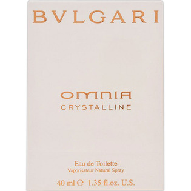
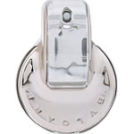

返回列表
产品名称：ブルガリオム ニアクリスタリンオードトワレ

ウエニ貿易 ブルガリオム ニアクリスタリンオードトワレ ４０ｍＬ
メーカー ウエニ貿易
JANコード 4941547577661
商品の特徴
クリスタルが放つ眩い透明感と、蓮の花が秘める純粋さは女性ひとり一人が持つ輝きと柔らかいセンシュアリティさを惹き出す香りです。
成分・分量
【成分】
変性アルコール、香料、水、ｔ－ブチルメトキシジベンゾイルメタン、メトキシケイヒ酸エチルヘキシル、サリチル酸エチルヘキシル、ＢＨＴ
用法及び用量
【使用方法】
手首、ひじ、かたなどに適量スプレーして、お使いください。